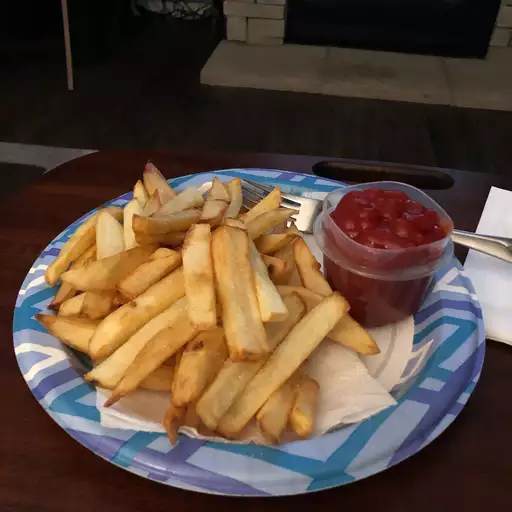

French Fries

Description
There's nothing quite like the enticingly crisp skin and fluffy interior of a french fry. Chef John's easy-to-follow recipe features a double-fried method that gets delicious, restaurant-style results every time. With just three ingredients, you'll have sizzling hot, homemade french fries that are ready to share. Learn the secrets to perfectly golden fries at home, plus, get tips on storing and freezing.
Ingredients
- 1 large russet potato, cut into evenly sized strips
- 2 cups vegetable oil for frying, or as needed
- salt to taste
Steps
- Soak potato strips in a large bowl of water for about 30 minutes. Pat with paper towels until thoroughly dry.
- Heat oil in a deep-fryer or large saucepan to 275 degrees F (135 degrees C). Gently add potatoes to the hot oil and fry for about 5 minutes, stirring and flipping the potatoes occasionally. Use a slotted spoon to transfer potatoes to a paper towel-lined plate. Let cool completely.
- Heat oil again, but this time to 350 degrees F (175 degrees C). Add potatoes and fry a second time until golden brown, 5 to 6 minutes.
- Remove from the deep-fryer and blot with a paper towel. Sprinkle with salt to serve.